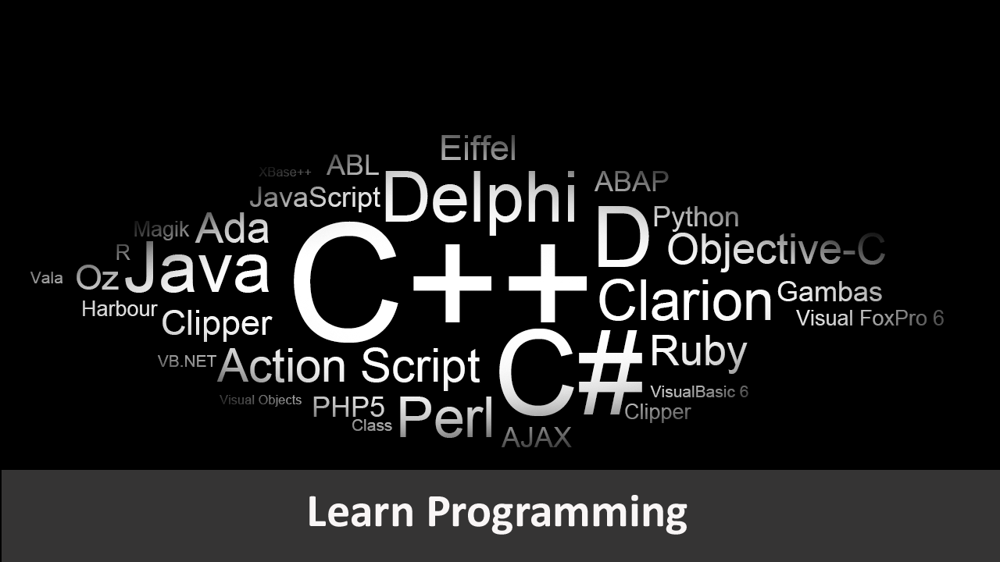

|  |
People who program can communicate with computers, which is becoming more and more important now that computers have a hand in almost everything. In today’s IT-literate world, we are all expected to be fluent in word processing and spreadsheets. The next logical step is to be able to program. |
|
Technology is advancing at an exponential rate and programming has become a necessity in today's world because every device that we hold is programmed to do specific tasks. Just as languages open up the ability to communicate with worlds of people, programming gives children the ability to create technologies that impact those around them. With just a computer, kids can use their programming skills to build things that could change the world. |